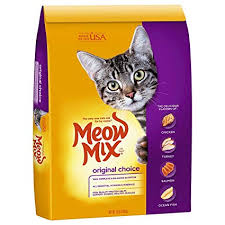

Cat Toy:
Frisky Flyer Feather
Price: 18$
Keep your kitty active with the SmartyKat Frisky Flyer Feather Wand Cat Toy. Designed to help you bond with your pal through interactive swatting play, it has an extendable wand and plenty of fluttery, wispy feathers to keep your pal engaged, not to mention adding much-needed exercise to his day. Great for indoor cats who need to keep moving, it activates your pal’s bird-chasing instinct so you can watch him hunt, whack, thump and pounce while you control the movement!
Petstages Tower of Tracks Cat Toy
Price: 15$
Your kitty will never lose another ball under the couch with the Petstages Tower of Tracks Cat Toy. With three exciting levels, this interactive toy encourages extended playtime as the colorful balls spin and roll around and around. It’s great for multiple-cat households and independent play because it lets cats enjoy an action-packed afternoon even when you’re not at home. The stacked play station is built to last and features non-skid pads so it won’t move about as your kitty plays.
Cat Food:
Poultry and Beef Favorites Variety Pack Canned Cat Food, 5.5-oz, case of 24
Price: 15$
With 9 Lives Poultry and Beef Favorites Variety Pack Canned Cat Food, your furry friend can enjoy a different flavor with every meal. This variety pack features 24 5.5-oz. cans of 9 Lives Hearty Cuts, which delivers big cuts of real meat, savory gravy, and the nutrition cats need to live long, healthy, happy lives. You’ll get 8 cans each of Hearty Cuts with Real Beef and Chicken in Gravy, Hearty Cuts with Real Chicken and Fish in Gravy, and Hearty Cuts with Real Turkey in Gravy—a true smorgasbord of flavor any cat would purr for.

Meow Mix Original Choice Dry Cat Food
Price: 21$
Meow Mix Original Choice Dry Cat Food is specially formulated to help adult cats stay healthy and happy. To maintain wellness throughout adulthood, fully grown cats need the proper nutrition to keep them in top shape as they age. Meow Mix Original Choice provides all the essential nutrients they need, including high-quality protein and essential fatty acids to help support strong muscles and keep their coat looking its best. It’s packed with tons of wholesome ingredients and the irresistible flavors of chicken, turkey, salmon and ocean fish. This tasty food is complete and balanced for adult cats with all the vitamins and minerals they need for optimal health.